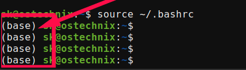

Python
Python is often included as part of the operating system (OS) environment, particularly on Linux systems. Regardless of the platform, it is good practice to create isolated Python virtual environments for project work rather than using the system-wide installation directly. This helps avoid dependency conflicts and prevents accidental changes to OS-level utilities or packages that may rely on the system Python installation.
Miniconda
Managing Python dependencies manually is generally impractical for computing workflows. Fortunately, several package managers are available to simplify environment and dependency management. At HMEC, the primary package manager used is "Conda", which is distributed through several interfaces and installations, including:
- Anaconda — a full scientific Python distribution that includes Conda along with many pre-installed packages and graphical tools (large installation)
- Miniconda — a lightweight Conda installer that provides only the core package and environment manager
- Miniforge — a community-maintained Conda distribution that emphasizes open-source packages and the conda-forge ecosystem
For most users in this course, Miniconda or Miniforge will be sufficient and are generally preferred due to their smaller installation size and greater flexibility. In this course, we will use Miniconda, while frequently installing packages from the conda-forge channel, a community-maintained repository that serves as the default package source for Miniforge.
Head over to the Miniconda installation page and follow the instructions for your OS.
On Windows
You will be using the Anaconda Prompt to access your command line terminal.
Once you get everything installed — assuming you side "yes" to initialize — your command prompt should include (base) to indicate that the "base" environment is active:

Figure 1: The active Conda environment appears next to name.
Check Point
If you haven't reached this point, STOP, and return the the installation documents. They cover this verbatim and their docs should be the primary source of knowledge.
Now that Miniconda is installed, we can create isolated Python environments for your work. These environments act as self-contained workspaces where you can install packages, experiment freely, and make changes without affecting your system-wide Python installation. If an environment becomes unstable or misconfigured, it can simply be removed and recreated from scratch.
Spyder IDE
Python code can be written using any text editor. However, development is often made much easier through additional tools such as debuggers, variable explorers, integrated terminals, and code completion utilities. These features are commonly bundled into what is known as an integrated development environment (IDE).
While many IDE options are available (e.g., Visual Studio Code), this course will use Spyder IDE because of its straightforward scientific computing workflow and MATLAB-like interface.
While you can install Spyder directly on your OS, we will instead create a dedicated Conda virtual environment for this course.
Open a new terminal (or Anaconda Prompt for Windows users) and type the following command:
This command creates a new virtual environment named spyder.
To see a list of all available Conda environments, run:
Next, activate the spyder environment:
You should now see (spyder), as opposed to (base), next to your name in the command prompt (see Figure 1).
Deactivate
To leave the current environment, use conda deactivate
Once the spyder environment is active, install Spyder with:
To start Spyder, run:
We will explore additional settings and features of Spyder later, after installing the remaining software requirements.